Alison Booth
Abbot, Willis John. Notable Women in History: The Lives of Women Who in All Ages, All Lands and in All Womanly Occupations Have Won Fame and Put Their Imprint on the World's History. Philadelphia: John C. Winston; London: Greening, 1913. London, 1914.
See How To Make It as a Woman, 250-51, 253, 263-64.
TOC: Agrippina; Aspasia; Cornelia; Cleopatra; Hypatia; Empress Theodora; Zenobia; Katherine of Aragon; Anne Boleyn; Mary Tudor; Mary Queen of Scots; Lady Jane Grey; Queen Anne; Queen Elizabeth; Catherine II of Russia; Christina, Queen of Sweden; Isabella of Castile; Maria Theresa of Austria; Marie Antoinette; Charlotte Corday; Empress Josephine; Hortense Bonaparte, Queen of Holland; Louise, Queen of Prussia; Catherine de Medici; Mme Roland; Queen Victoria; Countess du Barry,; Countess of Blessington; Barbara, Duchess of Cleveland; Mme du Deffand; Ninon de L'Enclos; Mme Recamier; Marquise de Pompadour; Mme de Maintenon; Mme de Stael; Sarah Jennings, Duchess of Marlborough; Mlle De la Valliere; Theodosia Burr; Susan B. Anthony; Elizabeth Cady Stanton; Lucy Stone; Julia Ward Howe; Florence Nightingale; Clara Barton; Frances E. Willard; Anne Hutchinson; Lucretia Mott; Mary Baker Eddy; Harriet Martineau; Charlotte Cushman; Nell Gwyn; Jenny Lind; Mme Ristori; Mrs. Siddons; Peg Woffington; Sarah Bernhardt; Adelina Patti; Louisa May Alcott; Jane Austen; Rosa Bonheur; Elizabeth Barrett Browning; Mary Ann Evans; Margaret Fuller; Charlotte Bronte; Harriet Beecher Stowe; George Sand; Mme Dudevant; Mme de la Ouida Ramee; Helen Hunt Jackson; Mary Lamb; Frances Trollope; Martha Washington; Dolly Madison; Joan of Arc. *Pop Chart.
-
Cleopatra
-
Cornelia
-
 Anne Boleyn
Anne Boleyn -
 Isabella of Castile
Isabella of Castile -
Marie Antoinette
-
 Charlotte Corday
Charlotte Corday -
 Empress Josephine
Empress Josephine -
Madame Roland
-
 Queen Victoria
Queen Victoria -
 Madame Du Barry
Madame Du Barry -
Duchess of Cleveland
-
Madame Recamier
-
 Madame de Pompadour
Madame de Pompadour -
Madame de Staël
-
 Sarah, Duchess of Marlborough
Sarah, Duchess of Marlborough -
Louise de la Valliere
-
Susan B. Anthony
-
Elizabeth Cady Stanton
-
Julia Ward Howe
-
Lucretia Mott
-
Harriet Martineau
-
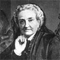Charlotte Cushman
-
Nell Gwyn
-
Mrs. Siddons
-
 Peg Woffington
Peg Woffington -
 Adelina Patti
Adelina Patti -
 Rosa Bonheur
Rosa Bonheur -
 George Eliot
George Eliot -
Harriet Beecher Stowe
-
 George Sand
George Sand -
 Martha Washington
Martha Washington -
 Joan of Arc
Joan of Arc
Search OCLC WorldCat for this title.
Search Google Books for this title.
Adams, Charles, and Daniel P. Kidder. Women of the Bible. New York: Lane & Scott for Sunday-School Union; Carlton & Phillips; Phillips & Hunt; Cincinnati, OH: Walden & Stowe, 1851; 1854. 4th ed., New York: Carlton & Porter, Sunday School Union, 1856; 1868.
TOC: Eve; Sarah; Lot’s Wife; Rebecca; Leah and Rachel; Pharoah’s Daughter; Deborah and Jael; Delilah; Naomi; Ruth; Hannah; Abigail; Bathseba; Queen of Sheba; Widow of Sarepta; Jezebel; The Shunammite; The “Little Maid; ” Vashti; Esther; The Virgin Mary; Elisabeth; Anna; Women of Samaria; Woman of Bloody Issue; Maby of Bethany; Martha; Martha and Mary; Herodias; Salome; Syro-Pheniciam Woman; Mother of James and John; Mary Magdelene; Sapphira; Dorcas; Lydia; Priscilla; Phebe; Tyrphena; Tryphosa; Persis; The Fretful Woman; The Strange Woman; The Virtuous Woman.
Recurrent title and type of collection.
Search OCLC WorldCat for this title.
Search Google Books for this title.
Adams, Charlotte Hannah. Women of Ancient Israel. New York: National Board of the YWCA, 1912; 1913. 3d ed., 1916.
“Written as a textbook for teachers in Bible study, this book discusses the lives of important women of the Old Testament.”
Search OCLC WorldCat for this title.
Search Google Books for this title.
Adams, Elmer Cleveland, and Warren Dunham Foster. Heroines of Modern Progress. New York: Sturgis & Walton; Macmillan, 1913; Sturgis, 1915; 1918; 1921; 1922; 1926; 1939.
See How To Make It as a Woman, 136, 147-149.
TOC: Elizabeth Fry; Mary Lyon; Elizabeth Cady Stanton; Harriet Beecher Stowe; Florence Nightingale; Clara Barton; Julia Ward Howe; Francis W. Willard; J. Ellen Foster; Jane Addams. See additional collection edited by Foster, Heroines of Modern Religion, 1913. *Pop Chart.
-
 Harriet Beecher Stowe
Harriet Beecher Stowe -
 Elizabeth Fry
Elizabeth Fry -
Mary Lyon
-
Elizabeth Cady Stanton
-
 Florence Nightingale
Florence Nightingale -
Clara Barton
-
Julia Ward Howe
-
Frances E. Willard
-
 J. Ellen Foster
J. Ellen Foster -
Jane Adams
Search OCLC WorldCat for this title.
Search Google Books for this title.
Adams, Henry Gardiner, ed. Cyclopaedia of Female Biography: Consisting of Sketches of All Women Who Have Been Distinguished by Great Talents, Strength of Character, Piety, Benevolence, or Moral Virtue of Any Kind; Forming a Complete Record of Womanly Excellence or Ability. London: Groombridge, 1857. Glasgow: Forrester, Stockwell, 1866. London: Routledge, 1869.
See How To Make It as a Woman, 206.
Borrows from Hale; British Library lists it under Hale. Frontispiece: vignettes of Lady Jane Grey, Lady Russell, Hannah More, and Felicia Hemans, cluster around a doubly crowned Queen Victoria. Many standard subjects form an encyclopedic group. Some subjects, such as Anna Jameson, Grace Aguilar, Sarah Hale, Elizabeth Ellet, and Agnes Strickland, are also presenters. A sample of the contents is listed here.
TOC: Lady Jane Grey; "Lady W. Russell"; Hannah More; Felicia Hemans; Queen Victoria; Anna Jameson; Grace Aguilar; Sarah Hale; Elizabeth Ellet; Agnes Strickland; Margaret Fuller; Harriet Martineau; Sarah Martin; Ann Judson; the Maid of Saragossa.
Search OCLC WorldCat for this title.
Search Google Books for this title.
Adams, William Henry Davenport. Celebrated Englishwomen of the Victorian Era. 2 vols., London: F. V. White, 1881; 1884; 1900.
See How To Make It as a Woman, 249, 263, 266-68.
TOC: Victoria; Harriet Martineau; Charlotte Bronte; Mary Russell Mitford; Mary Somerville; Sara Coleridge; Mary Carpenter; Adelaide Anne Procter; Marian George Eliot Evans; Jane Welsh Carlyle. *Pop Chart.
Of 29 collections by Adams listed in Riches, 7 are all-female. Bodleian catalogue lists 33 biographical collections, among 117 volumes by Adams (including seafaring adventures, histories of battles), plus 30 volumes that he edited or translated. Characteristic works include Round the World with the Union Jack (London, 1894) and The Secret of Success (London, 1879). Records of Noble Lives (London, etc.: Nelson, 1867), presents Sydney, Bacon, Robert Blake, George Monk, Duke of Albemarle, William Penn, and Robert O'Hara Burke and William John Wills [explorers]: "some noble Englishmen, for the special instruction and entertainment of English boys." Adams claims to be "a gatherer and disposer of other men's facts," and hopes to urge boys "to lead a true and noble life" (iii-v).
Search OCLC WorldCat for this title.
Search Google Books for this title.
---. Celebrated Women Travellers of the Nineteenth Century. London: Sonnenschein, 1883; 1887; 1889; 1903; 1906. New York: Dutton, 1903.
TOC: Countess Dora d'Istria; The Princess of Belgiojoso; Madame Hommaire de Hell; Madame Léonie d'Aunet; Miss Frederika Bremer; Mademoiselle Alexina Tinné; Madame Ida Pfeiffer; Madame de Bourboulon; Lady Hester Stanhope; Lady Brassey; Lady Morgan; Mrs. Trollope; Miss Harriet Martineau; Miss Isabella Bird; Lady Florence Dixie; Miss Gordon Cumming; Florence and Rosamond Hill; Lady Barker; “Magyarland.”.
Search OCLC WorldCat for this title.
Search Google Books for this title.
---. Child-Life and Girlhood of Remarkable Women: A Series of Chapters from Female Biography. London: W. Swan Sonnenschein, 1883; 1885; Sonnenschein & Lowery, 1887. Illustrated. New York: Dutton; London: Sonnenschein, 1895. London: Swan Sonnenschein, 1904.
TOC: Harriet Martineau; Fanny Burney; Elizabeth Inchbald; Charlotte Bronte; Sara Coleridge; Mrs. Somerville; Mary Russell Mitford; Lady Morgan; Lady Jane Grey; Mrs. Hutchinson; Mary Sidney Countess of Pembroke; Margaret More Roper; Mary Granville; Lady Montagu; Mary Wortley; Katharine Philips; Laetitia Pilkington; Elizabeth Rowe; Catherine of Siena; Joan of Arc; Mme de Miramion; Elizabeth Carter; Caroline Herschel; Mme Pape-Carpantier; Mrs.Fry; Lady Fanshawe; Mrs. Godolphin; Mme Roland; Mme Michelet; Eugenie de Guerin. *Pop Chart.
British Library.
-
 Charlotte Bronte
Charlotte Bronte -
 Mary Russell Mitford
Mary Russell Mitford -
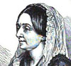Lady Morgan
-
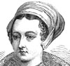Lady Jane Grey
-
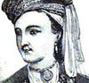Lady Mary Wortley Montagu
-
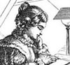Caroline Herschel
-
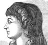Madame Roland
Search OCLC WorldCat for this title.
Search Google Books for this title.
---. Exemplary Women: A Record of Feminine Virtues and Achievements. London: 1882.
Bodleian Abridged from Woman's Work and Worth.
TOC: Woman as Mother; Woman as Wife; Woman as Maiden; Woman in the World of Letters; Woman in the World of Art; Woman as the Heroine; Woman as Enthusiast and Social Reformer.
-
 Florence Nightingale
Florence Nightingale -
 Monnica, St. Augustine’s Mother
Monnica, St. Augustine’s Mother -
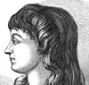Madame Roland
-
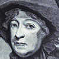Mrs. Thrale Piozzi
-
 Lady Jane Grey
Lady Jane Grey -
 Angelina Kaufman
Angelina Kaufman -
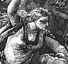Joan of Arc
-
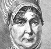Elizabeth Fry
Search OCLC WorldCat for this title.
Search Google Books for this title.
---. Famous Beauties and Historic Women: A Gallery of Croquis Biographiques. 2 vols., London: C. J. Skeet, 1865.
TOC: vol I: Nell Gwynne; Barbara Villiers, Duchess of Cleveland; Elizabeth Hamilton, Countess de Grammont; Frances Stewart, Duchess of Hamilton; Henrietta Maria, Duchess of Orleans; Madame de Maintenon; Gabrielle d'Estrée, Duchess de Beaufort. vol II : Mrs. Radcliffe; The Duchess de la Vallière; Madame de Staël; Sarah, Duchess of Marlborough; Agnes Sorel; Madame Récamier. *Pop Chart.
Bodleian
Search OCLC WorldCat for this title.
Search Google Books for this title.
---. Some Historic Women; or, Biographical Studies of Women Who Have Made History. London: J. Hogg, [1891]; [1890-99}.
TOC: pt. 1. Woman as Patriot: Joan of Arc (Jeanne Darc); Mme Roland; pt. 2. Woman as the Religious Enthusiast: Margaret, Queen of Scotland; St. Elizabeth, Queen of Hungary; St. Catherine of Siena; pt. 3. Woman as an Example of Fidelity: Lady Arabella Stuart; pt. 4:.Woman as Sovereign: Margaret of Anjou; Jeanne D'Albret, Queen of Navarre; Queen Elizabeth; Christina, Queen of Sweden; Maria Theresa, Empress of Germany; Louisa, Queen of Prussia. *Pop Chart.
Bodleian
Search OCLC WorldCat for this title.
Search Google Books for this title.
---. Stories of the Lives of Noble Women. London: T. Nelson, 1877; 1880; 1882; [1911]; 1904.
Riches.
TOC: Anne Askew; Lady Vere; Lady Alicia Lisle; Elizabeth Gaunt; Elizabeth Inchbald; Lady Arabella Stuart; Lady Jane Grey; Mary Countess of Pembroke; Queen Jeanne d'Albret; Mme Roland; Charlotte Brontë.
Bodleian. Same contents as Adams, The Sunshine, with the addition of Charlotte Brontë
Search OCLC WorldCat for this title.
Search Google Books for this title.
---. The Sunshine of Domestic Life; or, Sketches of Womanly Virtues, and Stories of the Lives of Noble Women. London: Nelson, 1867; 1868; 1869; 1873; 1876. Boston, 1882. London: 1891.
TOC: Anne Askew; Lady Vere; Lady Alicia Lisle; Elizabeth Gaunt; Elizabeth Inchbald; Lady Arabella Stuart; Lady Jane Grey; Mary Countess of Pembroke; Queen Jeanne d'Albret; Mme Roland. *Pop Chart.
Bodleian. Republished as Stories of the Lives of Noble Women in Nelson's Girls' Library.
Search OCLC WorldCat for this title.
Search Google Books for this title.
---. Woman's Work and Worth in Girlhood, Maidenhood, and Wifehood: With hints on self culture and chapters on the higher education and employment of women. London: J. Hogg, 1879; 1880. New York: Cassell, Petter, Galpin, 1880; 1884. Chicago: Rand McNally, 1884.
Approximately 210 subjects. See also Pop Chart
Search OCLC WorldCat for this title.
Search Google Books for this title.
---. Women of Fashion and Representative Women in Letters and Society: A Series of Biographical and Critical Studies. 2 vols., London: Tinsley, 1878.
TOC: Lady Mary Wortley Montagu; The Duchess of Marlborough; Lady Morgan; Madame d'Arblay [Fanny Burney]; Mrs. Elizabeth Inchbald; The Countess of Blessington; Charlotte Brontë; Miss Berry.
Search OCLC WorldCat for this title.
Search Google Books for this title.
Addition, Lucia H. Faxon. Twenty Eventful Years of the Oregon Woman's Christian Temperance Union, 1880-1900: Statistical, Historical and Biographical Portraits of Pioneer Workers. Portland, OR: Gotshall, 1904.
NOT=Local compendium; reform miscellany. It does include biographies of women.
Search OCLC WorldCat for this title.
Search Google Books for this title.
Adelman, Joseph Ferdinand Gottlieb. Famous Women: An Outline of Feminine Achievement through the Ages, with Life Stories of Five Hundred Noted Women. New York: Ellis M. Lonow, 1926. New York: Rogers, Pictorial Review, Woman's World, 1928.
Large-scale table of contents not attempted for database.
Search OCLC WorldCat for this title.
Search Google Books for this title.
Adeney, Walter Frederic. Women of the New Testament. London: Service & Paton; J. Nisbet, 1899. London: J. Nisbet; New York: T. Whittaker, 1901; 1906.
TOC: Mary [Mother of Jesus]; Elizabeth; Anna; The Woman of Samaria; The Women who Ministered to Jesus; The Woman who Touched the Hem of his Garment; The Woman who Washed his Feet with her Tears; The Canaanite Woman; The Mother of James and John; The Sisters Martha and Mary; The Widow with Two Mites; Mary Magdalene.
Adeney is identified as a professor of New College, London. Table of contents (with its capitalization) is derived from Clyde Weber Votaw, Book Review in The Biblical World 14: 3 (Sep. 1899): 221-2. While Votaw calls it a lucid unsentimental book, he says Adeney’s “recital of history” of women’s subordination in the church of first century seems intended to argue for her exclusion from leadership today (222). Series: The popular Biblical library, v. 4; Variation: Women and the Church in America
Search OCLC WorldCat for this title.
Search Google Books for this title.
Aguilar, Grace. The Women of Israel: or, Characters and Sketches from the Holy Scriptures and Jewish History, Illustrative of the Past History, Present Duties, and Future Destiny of the Hebrew Females, as Based on the Word of God. London: Groombridge, 1845; 1853; 1857. New edn. Boston: Hickling, Swan & Brewer, 1857. 2 vols., New York and Philadelphia: Appleton, 1850; 1851; 1852; 1853; 1854; 1857; 1860; 1862; 1864; 1866. London: Groombridge; New York: Appleton, 1870. London: Groombridge, 1871; 1872; 1873; 1874; 1875; 1876; 1878; 1879; 1881; 1884; 1886. New York: Appleton, 1871; 1874; 1875; 1878; 1879; 1881; 1883; 1887. London: Routledge; New York: Dutton, 1879. 1 vol., New York: Appleton; London: Routledge, 1889; 1891; 1892; 1897; [1900?]. New ed. New York: Appleton, 1907; 1913; 1917.
Oldfield.
Bodleian. Aguilar is the author of fiction, notably, Woman's Friendship: A Story of Domestic Life (London: Groombridge; New York: Appleton, 1850), evidently in print in London until 1903, in New York until 1901. In 1870, Appleton issued her Works in nine volumes (7 vols., volumes 6 and 7 in two parts each).
TOC: Miriam; Deborah; Wife of Manoah; Naomi; Hannah.
Search OCLC WorldCat for this title.
Search Google Books for this title.
Ahlers, Lena C. Daughters Known to Fame. Chicago: A. Whitman, 1932; 1942. New York: A. Whitman, 1935.
TOC: Jane Addams; Louisa May Alcott; Susan B. Anthony; Amelia Barr; Clara Barton; Sara Bernhardt; Josephine Bonaparte; Rosa Bonheur; Charlotte Brontë; Elizabeth B. Browning; Alice Cary; Phoebe Cary; Cleopatra; Fanny Crosby; Charlotte Cushman; Virginia Dare; Madam De Staël; Mary Baker Eddy; George Eliot; Esther; Fanny Fern; Barbara Frietchie; Lucy Page Gaston; Felicia D. Hemans; Julia Ward Howe; Anne Hutchinson; Hypatia; Jean Ingelow; Queen Isabella; Helen Hunt Jackson; Joan of Arc; Helen Keller; Lucy Larcom; Jenny Lind; Mary Lyon; Marie Antoinette; Mary, Queen of Scots; Maria Mitchell; Lucretia Mott; Florence Nightingale; Ouida; Elizabeth Stuart Phelps; Molly Pitcher; Pocahontas; Adelaide Proctor; Betsy Ross; Ruth; Sacajawea; Anne Howard Shaw; Kate Shelley; Elizabeth Cady Stanton; Harriet Beecher Stowe; Celia Thaxter; Queen Victoria; Martha Washington; Emma Willard; Frances E. Willard; Ella Flagg Young.
Search OCLC WorldCat for this title.
Search Google Books for this title.
Aikman, Duncan. Calamity Jane and the Lady Wildcats. New York: Holt, 1927.
TOC: Calamity Jane; The Woman Has to Suffer: Cattle Kate; Belle Starr; The Extinction of a Comet: Lola Montez; The Last Lady Road Agent: Pearl Heart; Mme. Moustache and Some Gaming Ladies; And Other Wildcats: Minnie, Poker Alice, Kitty the Schemer; The Claw of Respectability: Mrs. William Arthur, Miss Pellet; A Note on Carrie Nation; Bridget Grant.
Search OCLC WorldCat for this title.
Search Google Books for this title.
Alec-Tweedie, Mrs. [Ethel]. Women the World Over: A Sketch Both Light and Gay, Perchance Both Dull and Stupid. London, 1914. New York: Doran, 1914, [1915].
One OCLC item states "with 53 illustrations...including 21 Cartoons by W. K. Haselden." A strange mixture of advice (“DON'T giggle” [2]), anthropology (illustrations of “Mother Love: Dakota Squaw and Child” facing 80), argument-by-example (e.g. lists of eminent women, 22), travel, and feminist argument for equal pay and work, written just before war broke out by a Fellow of the Royal Geographical Society. Interspersed cartoons on changing manners in upper-class Western life; photographs of national female types (e.g. “A Japanese Type of Beauty” facing 72). The author herself poses like an odalisque “in Moorish dress” (frontis.). Index names many women. Related work by Alec-Tweedie: Women and Soldiers (London and New York: Lane, 1918), on women's work during WWI.
-
 Queen Alexandra
Queen Alexandra -
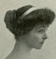The Duchess of Marlborough
-
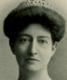Madame Diaz
-
 The Duchess of Sutherland
The Duchess of Sutherland -
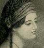Byron's Maid of Athens
Search OCLC WorldCat for this title.
Search Google Books for this title.
Alexander, Julia McGehee. Mothers of Great Men: Sketches. Charlotte, NC: Observer, 1916.
TOC: Mary Ball Washington, Mother of Washington; Margaret Cox Ruskin, Mother of John Ruskin; Margaret Aitken Carlyle, Mother of Thomas Carlyle; Susanna Annesley Wesley, Mother of John and Charles Wesley; Monica, Mother of Saint Augustine.
Glimpses of the mothers of many great men. Compare Sarah Ellis and others.
Search OCLC WorldCat for this title.
Search Google Books for this title.
Alger, Rev. W. R. The Friendships of Women. 3d ed., Boston: Roberts, 1867; 1868; 1870; 1872; 1875; 1882; 1885.
Largely a treatise on the subject, a prototype of social psychology in a way, with many pages of brief biographical history (416 pages excluding front matter). Dedicated to Anna Cabot Lodge. "Works by the Same Author": The Poetry of the Orient; A Critical History of the Doctrine of a Future Life; The Genius of Solitude. The table of contents runs for four close-typed pages; we reproduce the list for searching purposes without tagging the names. The scope is international and overwhelmingly Western, with an interesting anachronism and willingness to include Biblical, mythic or legendary persons. Some startling assertions include the friendship of Augusta and Lord Byron; the generally conservative admiration of women is characterized in the headings at the end advising women to avoid politics; both men and women should eschew power. Certain persons such as Elizabeth Barrett Browning appear more than once. After sections affirming the significant history of female friendship (HAVE WOMEN NO FRIENDSHIPS?) and defining his concept (FRIENDSHIP INSIDE AND OUTSIDE THE TIES OF BLOOD, FRIENDSHIP BETWEEN PARENTS AND CHILDREN), by page 47 the text accumulates very short biographies (often of one paragraph, but sometimes of several): FRIENDSHIPS OF MOTHERS AND SONS Cornelia and the Gracchi. Olympias and Alexander. Monica and Augustine. John Quincy Adams and His Mother. Goethe and his Mother. The Humboldts and their Mother. Guizot and his Mother. FRIENDSHIPS OF DAUGHTERS AND FATHERS Tullia and Cicero. Margaret Roper and Sir Thomas More. Agnes and William Wirt. Mary and John Evelyn. Theodosia and Aaron Burr. Maria and Richard Edgeworth. Madame de Stael and Necker. Letitia Landon and her Father. FRIENDSHIPS OF SISTERS AND BROTHERS Narcissus and his Reflection. Electra and Orestes. Antigone and Polynices. Diana and Apollo. Scholastica and Benedict. Cornelia and Tasso. Margaret and Francis. Mary and Sir Philip Sidney. Catherine and Robert Boyle. Caroline and William Herschel. Letitia and John Aikin. Cornelia and Goethe. Lena and Jacobi. Lucile and Chateaubriand. Charlotte and Schleiermacher. Dorothy and Wordsworth. Augusta and Byron. Mary and Charles Lamb. Fanny and Felix Mendelssohn. Whittier and his Sister. Eugenie and Maurice de Guerin. FRIENDSHIPS OF WIVES AND HUSBANDS. Count and Countess del Verme. Lady and Sir James Mackintosh. Aspasia and Pericles. Portia and Brutus. Arria and Pertus. Paulina and Seneca. Calpurnia and Pliny. Timoxena and Plutarch. Castara and Habington. Faustina and Zappi. Jeanne and Roland. Caroline and Herder. Lucy and John Hutchinson. Sarah and John Austin. Elizabeth and Robert Browning. Leopold Schefer and his Wife. John Stuart Mill and his Wife. Lady and Lord William Russell. Artemisia and Mausolus. Moomtaza and Jehan. PLATONIC LOVE; THE MARRIAGE OF SOULS Relative Prevalence of Vice in our day. Moral Influence of Friendships between Men and Women. Analysis of Platonic Love. Laura and Petrarch. Beatrice and Dante. Heloise and Abelard. Danger and Safety of Platonic Love. Countess Matilda and Hildebrand. The "Woldemar" of Jacobi. Influence of Chivalry in developing Friendships of Men and Women. Causes of Prominent Social Position of Women in France. Friendships in Catholic Church between Women and their Directors. Olympias and Chrysostom. Paula and Jerome. Clara and Francis of Assissi. Chantal and Francis of Sales. Guion and Lacombe. La Maisonfort and Fenelon. Cornuau and Bossuet. Theresa and John of the Cross. The Friendship of Vittoria Colonna and Michael Angelo. Mademoiselle de Scudery and Pelisson. Madame de Sevigne and Corbinelli. Madame de la Fayette and Rochefoucauld. Madame du Deffand and D'Alembert. Mademoiselle Lespinasse and D'Alembert. Madame de Stael and Montmorency. Magdalen Herbert and Dr. Donne. Lady Masham and John Locke. Mary Unwin and Cowper. Mrs. Clive and Garrick. Hannah More and Langhorne. Joanna Baillie and Sir Walter Scott. Duchess of Devonshire and Fox. Duchess of Gordon and Dr. Beattie. Charlotte and Humboldt. Bettine and Goethe. Goethe's Treatment of Women in his Life and in his Works. Princess of Homburg and Marchioness di Barolo and Silvio Pellico. Isabel Fenwick and Wordsworth. Harriet Martineau and Channing. Lucy Aikin and Channing. Frances Power Cobbe and Theodore Parker. Friendships of Women and their Tutors. Zenobia and Longinus. Countess of Pembroke and Daniel. Princess Elizabeth and Descartes. Caroline of Brunswick and Leibnitz. Lady Jane Grey and Elmer. Elizabeth Robinson and Middleton. Hester Salusbury and Dr. Collier. Blanche of Lancaster and Chaucer. Venetia Digby and Ben Jonson. Countess of Bedford and Ben Jonson. Countess Ranelagh and Milton. Duchess of Queensbury and Gay. Relations with Women, of Sophocles, Virgil, Frauenlob, Bernadin St. Pierre, Rousseau, and Jean Paul Richter. Rahel Levin and her Friendships with Men. Madame Recamier and her Friendships with Men. Elizabeth Barrett, Hugh Stuart Boyd, and John Kenyon. Clotilde de Vaux and Auguste Comte. Madame Swetchine and her Friendships with Men. FRIENDSHIPS OF MOTHERS AND DAUGHTERS Madame de Sevigne and Madame de Grignan Madame de Rambouillet and Julie d'Angenne Mrs. Browne and Felicia Hemans. Naomi and Ruth. FRIENDSHIPS OF SISTERS Dido and Anna. Hannah and Martha More. Mary and Agnes Berry. Charlotte, Anne, and Emily Bronte. Joanna and Agnes Baillie. FRIENDSHIPS OF WOMAN WITH WOMAN Treatment of Female Friendship in Literature. School-girl Friendships. Friendships in Conventual Life. Jeanne Philippon and Angelique Boufflers. Agnes Arnauld and Jacqueline Pascal. Madame de Longueville and Angelique Arnauld. Friendships between Queens and their Maids of Honor. Sakoontali and Anastiya. Marie de Medicis and Eleanora Galigaei. Queen Philippa and Philippa Picard. Lady Jane Beaufort and Catherine Douglas. Mary Stuart and her Four Marys. Queen Elizabeth and her Attendants. Queen Anne and Sarah Jennings. Marie Antoinette and the Princess de Lamballe. Queen Hortense and Madame de Faverolles. PAIRS OF FEMALE FRIENDS Beatrice Portinari and Giovanna. Dorothea Sydney and Sophia Murray. Katherine Phillips and Regina Collier. Elizabeth Rowe and the Countess of Hertford. Countess of Pomfret and Countess of Hertford. Lady Harley and Mrs. Montague. Hannah More and Mrs. Garrick. Elizabeth Carter and Catherine Talbot. Charlotte Smith and Lady O'Niel. Anna Seward and Honora Sneyd. The Countess of Northesk and Anna Seward. Eleanor Butler and Sarah Ponsonby, the Ladies of Llangollen. Fanny Burney and Mrs. Thrale. Guenderode and Bettine Brentano. Miss Benger and Lucy Aikin. Lucy Aikin and Joanna Baillie. Mrs. Hemans and Miss Jewsbury. Mary Mitford and Mrs. Browning. Madame de Stael and Madame Recamier. Madame Swetchine and the Countess Edling. Countess D'Ossoli and the Marchioness Arconati. The Duchess of Orleans and her Lady Companion. THE NEEDS AND DUTIES OF WOMAN IN THIS AGE Evils and Defects of Society and their Remedy. The Ideal of Marriage. Public Life versus Domestic Life. Caste: Diminution of its Influence. The Common Destiny, and the Peculiar Destiny, of Woman. Life in the Harems of the East. Right of Woman to every form of Education and Labor. Grounds of the exclusion of Women from Public Life. The Right of Women to engage in Politics. The Inexpediency of their doing so. Impartial Consideration of both sides of the Question. Morality, eternal; Politics, temporary. Gradual historic Emancipation of Woman. Comparative Condition of Woman in the Oriental, the Classic, the early Christian, and the Modern World. Relation of Mohammed and of Jesus to Women. Light thrown on the Condition of Women in Greece by the History of Sappho. Sentiment of Chivalry towards Woman. Woman ennobled by sharing in great public Interests. Decline of Letter-writing in our day. Duty of Women to cultivate Conversation. Duty of Women to cultivate the art of Manners. Value of model Types of Women. Disinterestedness, the Redemption of Man. Woman as seen in Mythology. Conclusion of the matter. Friendship in the Future.
Search OCLC WorldCat for this title.
Search Google Books for this title.
Alldridge, Lizzie. Florence Nightingale. Frances Ridley Havergal. Catherine Marsh. Mrs. Ranyard (“L. N. R.”). London, Paris, New York, and Melbourne: Cassell, 1885; 1887; 1889; 1893. 3d ed., New York, 1887. 4th ed., New York, 1889. 5th ed., New York, 1890; 1893.
6th ed. as The World's Workers: Florence Nightingale. Frances Ridley Havergal. Catherine Marsh. Mrs. Ranyard (“L. N. R.”) . See companion volumes by Browne and Tompkinson.
Search OCLC WorldCat for this title.
Search Google Books for this title.
The American Book of Beauty: with Illustrations on Steel, by Eminent Artists; Edited by a Lady. New York: Wilson, 1845. Subtitle variant: Or, Token of Friendship. Hartford, CT: Andrus, 1845.
See Cameron, 1904. NOT= Portrait collection; literary anthology. The texts include stories and other items of interest, with poems written to accompany the portraits of American beauties. A dedicatory poem to the editor: To Mrs. Henry Baldwin. Other items include "To Miss Adelia Hoyt"; "The Minister's Daughter," by Miss Tyndal; "The Emperor and the Alchymist," from the German; "On the Portrait of Miss Tyndal."
-
Mrs. Henry Baldwin
-
 Miss Adelia Hoyt
Miss Adelia Hoyt -
Miss Caroline Harriette Tyndal
-
Miss Jane Spalding
-
 Mrs. Verschoyle
Mrs. Verschoyle -
 Miss Ketchum
Miss Ketchum -
 The Countess de Calabrella
The Countess de Calabrella
Search OCLC WorldCat for this title.
Search Google Books for this title.
An American Lady [Ann Hasseltine Judson]. Sketches of the Lives of Distinguished Females: Written for Girls, with a View to Their Mental and Moral Improvement. New York: Harper, 1833. Reprint 1837. By Anne Hasseltine Judson, 1847; 1854.
An educational dialogue by the celebrated, first “Mrs. Judson," according to some library records. Anne Judson is the subject of the last chapter, and so perhaps there would have been more incentive for anonymity. The Preface begins with the idea of biography as example especially influential on the young female. Judson disclaims originality; the biographies derive from existing records. Because some women are dangerous models, she selects and shapes the narratives for good effect on readers while avoiding allusion to sectarian differences (all are "Christians"). According to custom, she apologizes for necessary limits on the selection. The Introduction consists of a dialogue between a daughter, Mary, and her mother "Mrs. G." (presumably the same as Mrs. Grenville in the opening chapter) relating an anecdote about a man who gave a boy a biography of Benjamin Franklin because it had such an influence on his own life. "Are there no histories of good and great women, mother?" (xiv). The mother plans a weekly evening sewing circle of young girls to which she can read aloud selectively, with moral annotation, the appropriate model lives of women (as some historic women are misleading guides for the kind of daughter she would wish to raise). Mrs. Grenville gathers "engraved portraits" as well as biographies for this book club (no illustrations appear in the Google Book version). An interesting passage depicts Mary arranging the parlor for guests, tending her house plants and placing flowers. The first evening, each girl is catechised on the kind of woman she wants to be, and Mrs. G. affirms that they do not all need to follow the same model, but all should be devout, and any learned accomplishment should be accompanied by good housekeeping skills (here an apt quotation of Hannah More). The chapters follow the series of supposed evening meetings. There is no table of contents (though running headers name the women). Mrs. G. comments on the shift from historical grandeur to examples that her auditors might plausibly emulate. One evening is dedicated to Elizabeth Smith, born near Durham, England, in 1776; remarkable for learning (a translator); exemplary for her good cheer and resourcefulness when her family loses its wealth (as happens more frequently in America); known as resident of Coniston and subject of a poetic tribute and a biography after her death of tuberculosis. The following evening on the poet Davidson explicitly compares the two women, though favoring the latter for her productivity in poetry (examples given). Mrs. Graham was stranded as a widowed mother, during Revolutionary War, in Antigua; became a philanthropist in New York. Mrs. Judson's life takes up the final, eighth evening, with a concluding summary of the examples reviewed.
TOC: Semiramis; Cleopatra; Zenobia; Isabella Queen of Castile; Lady Jane Grey; Queen Elizabeth I; Mary Queen of Scots; Queen Christina of Sweden; Lady Rachel Russel; Elizabeth Smith; Lucretia Maria Davidson [1808-1825]; Mrs. Isabella Graham [nee Marshall, b. Scotland 1742]; Mrs. Judson.
Search OCLC WorldCat for this title.
Search Google Books for this title.
American Sunday-School Union. Notable Women of Olden Times. Philadelphia: American Sunday-School Union, 1852.
TOC: Sarah; Hagar; Rebekah; Leah and Rachel; Miriam; Deborah; Jezebel; Athaliah; Esther.
Search OCLC WorldCat for this title.
Search Google Books for this title.
America's Twelve Great Women Leaders during the Past Hundred Years as Chosen by the Women of America; a Compilation from the Ladies' Home Journal and the Christian Science Monitor. Chicago: Associated Authors, 1933.
TOC: Jane Addams; Susan B. Anthony; Clara Barton; Carrie Chapman Catt; Mary Baker Eddy; Julia Ward Howe; Helen Keller; Mary Lyon; Amelia Earhart Putnam; Harriet Beecher Stowe; Frances E. Willard; Dr. Mary E. Woolley.
Search OCLC WorldCat for this title.
Search Google Books for this title.
Anderson, James Henry. Ten Women of the Olden Days: Who Have Influenced History to the End of Time. Salt Lake City, Utah: n.p., 1929.
Also found under the expanded title, "Ten women of the olden days who have influenced history to the end of time: God's story in mothers from Eden's garden till warring nations sink to rise no more; dedicated to those noble women in Israel whose blissful sway in Y.L.M.I.A. extends to every land and clime."
Search OCLC WorldCat for this title.
Search Google Books for this title.
Anderson, Rev. James [of Edinburgh]. The Ladies of the Covenant: Memoirs of Distinguished Scottish Female Characters, Embracing the Period of the Covenant and the Persecution. London: Blackie, 1850; 1851. Glasgow: Blackie, 1852; 1853; 1855; 1857; 1862. New York: Redfield, 1851; 2d ed. Clinton Hall, NY: Redfield, 1853; 1855; New York: Armstrong, 1880.
TOC: A. C., Marchioness of Hamilton; C. H. Boyd; Lady E. M. Culross; J. C., Viscountess of Kenmure; M. D., Marchioness of Argyll; J. R. Guthrie; M. M. Durham; J. M. Carstairs; A. H., Duchess of Hamilton; Marion F. Veitch; J. F. Livingstone; A. L., Duchess of Rothes; M. J. Crawford; B. C. Caldwell; M. W. Convill; C. R. Cavers; Isabel Alison; Marion Harvey; H. J. Hume; L. D. Campbell; Margaret Wilson; Margaret M'Lauchlin; A. M. Argyll; H. I. Campbell; G. H., Lady Baillie; C. H. Atholl.
Search OCLC WorldCat for this title.
Search Google Books for this title.
Anderson, Rev. James. Ladies of the Reformation: Memoirs of Distinguished Female Characters, Belonging to the Period of the Reformation in the Sixteenth Century. England, Scotland, and the Netherlands. London: Blackie, 1854. London, Edinburgh, Glasgow, New York: Blackie, 1855. New York: Blackie, 1857.
TOC: Anne of Bohemia; Anne Boleyn; Anne Askew; Katharine Parr; Lady Jane Grey; Katharine Willoughby; Anne de Tserclas; Katharine Vermilla; Queen Elizabeth; Mildred Cooke; Anne Cooke; Katharine Hamilton; Helen Stark; Isabel Scrimger; Elizabeth Aske and Marjory Bowes; Elizabeth Campbell; Eliz Knox; Wendelmuta Klaas; Lysken Dirks; Mrs. Robert Oguier; Betken; Elizabeth Vander Kerk; Charlotte De Bourbon; Louise De Colligny.
Search OCLC WorldCat for this title.
Search Google Books for this title.
---. Ladies of the Reformation: Memoirs of Distinguished Female Characters, Belonging to the Period of the Reformation in the Sixteenth Century. Germany, Switzerland, France, Italy, and Spain. London, Edinburgh, Glasgow, and New York: Blackie, 1857.
TOC: Ursula, wife of Conrad Cotta; Katharine von Bora, wife of Martin Luther; Elizabeth, wife of Joachim I., Elector of Brandenburg; Elizabeth, wife of Eric, Duke of Brunswick-Calenberg, and afterwards of Prince Poppo of Henneberg; Sibylla of Cleves, wife of John Frederick, Elector of Saxony; Katharine, wife of Henry, Prince of Schwartzburg; Louisa Juliana of Nassau, Electress Palatine; Anna Reinhard, wife of Ulric Zwingle; Idelette de Bures, wife of John Calvin; Louise de Montmorency, Lady Châtillon; Marguerite de Valois, Duchess of Alençon, afterwards Queen of Navarre; Jeanne d'Albret, Queen of Navarre; Charlotte Arbaleste, wife, first of Seigneur de Feuqueres, and secondly, of Philip de Mornay; Renée, Duchess of Ferrara; Olympia Morata, wife of Andres Grunthler; Lavinia della Rovere, Princess Orsini; Leanor de Cisneros, wife of Antonio Herezuelo; Doa Leanor de Vibero, wife of Pedro Cazalla; The Doas Gonzalez, sisters of Doctor Juan Gonzalez; Maria de Bohorques; Doa Juana de Bohorques, Baroness of Higuera.
Second volume of Anderson's studies of women of the Reformation. Illustrated by James Godwin, George Thomas, etc. Each national group has a separate section with Historical Introduction.
Search OCLC WorldCat for this title.
Search Google Books for this title.
---. Memorable Women of the Puritan Times. 2 vols., London: Blackie, 1861; 1862.
Riches.
Chapter titles of volume II (Hathi Trust): Mary Cromwell, daughter of Oliver Cromwell, wife of Thomas Belasyse, Earl of Fauconberg; Frances Cromwell, daughter of Oliver Cromwell, wife first of Robert Rich, afterwards of Sir John Russell; Lucy Apsley, wife of Colonel Hutchinson; Katharine Boyle, wife of Arthur Jones, Viscount Ranelagh; Margaret Charlton, wife of Richard Baxter; Elizabeth, wife of John Bunyan; Agnes Beaumont, friend of John Bunyan; Katharine Matthews, wife of Philip Henry; Rachel Wriothesley, wife of Lord William Russell; Alice Beconsaw, wife of Lord John Lisle; Elizabeth Gaunt, wife of William Gaunt; Hannah Hewling, wife of Major Richard Cromwell, grandson of Oliver Cromwell; Bridget Ireton, wife of Thomas Bendish.
TOC: Mary Cromwell; Frances Cromwell; Lucy Apsley Hutchinson; Katharine Boyle, Lady Ranelagh; Margaret Charlton Baxter; Elizabeth Bunyan; Katharine Matthews Henry; Rachel Wriothsley; Alice Beconsaw, Lady Lisle; Elizabeth Gaunt; Hannah Hewling Cromwell; Bridget Ireton Bendish.
Search OCLC WorldCat for this title.
Search Google Books for this title.
Anderson, William. Model Women. London: Hodder & Stoughton, 1870.
British Library. Congregational Minister, Member of the General Council of the University of Aberdeen. “Author of ‘Self-Made Men,’ ‘Kings of Society,’ etc., etc."
TOC: Susanna Wesley; Eliza Hessel; Elizabeth Fry; Amelia Wilhelmina Sieveking; Hannah More; Anne Grant; Anne Louisa Stael; Carolina, Baroness Naire; Felicia Dorothea Hemans; Elizabeth Barrett Browning; Charlotte Nichols; Caroline Lucretia Herschel; Jane Anne Taylor (Janet Taylor); Selina, Countess of Huntingdon; Elizabeth, Duchess of Gordon; Mary Jane Graham; Fidelia Fiske.
Search OCLC WorldCat for this title.
Search Google Books for this title.
Appleton's Portrait Gallery of Women: Celebrated in History, Poetry, and Romance, for Beauty, Character, and Heroism. New York: Appleton, 1875. As: World Noted Women Celebrated in History, Poetry, and Romance for Beauty, Character, and Heroism, 2 vols., New York: Appleton, 1881.
“Embracing historical subjects and ideal portraits of the wonderful creations of Shakespeare, Lord Byron, and Sir Walter Scott.” Note Appleton title by Mary Cowden Clarke, World-Noted Women, 1857. Compare Bristol, Finden, and Jameson, for literary heroines.
Search OCLC WorldCat for this title.
Search Google Books for this title.
Armytage, A. J. Green [or Green-Armytage]. Maids of Honour: Twelve Descriptive Sketches of Single Women Who Have Distinguished Themselves in Philanthropy, Nursing, Poetry, Travel, Science, Prose. With Portraits. London and Edinburgh: Blackwood, 1906.
TOC: Hannah More; Mary Carpenter; Caroline Lucretia Herschel; Sister Dora [Dorothy Wyndlow Pattison]; Mary Kingsley; Adelaide Anne Procter; Marianne North; Jean Ingelow; Louisa Alcott; Christina Rossetti; Agnes Strickland; Epilogue: Mary Lamb.
Cf. same title by Lewis Melville [i.e. Lewis Saul Benjamin], Frank Ranelagh [i.e. Robert Folkestone Williams].
-
 Adelaide Anne Procter
Adelaide Anne Procter -
Agnes Strickland
-
 Caroline Herschel
Caroline Herschel -
 Christina Rossetti
Christina Rossetti -
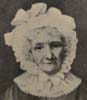Hannah More
-
 Jean Ingelow
Jean Ingelow -
 Louisa Alcott
Louisa Alcott -
 Marianne North
Marianne North -
 Mary Carpenter
Mary Carpenter -
Mary Kingsley
-
 Mary Lamb
Mary Lamb -
 Dorothy Wyndlow Pattison. ("Sister Dora.")
Dorothy Wyndlow Pattison. ("Sister Dora.")
Search OCLC WorldCat for this title.
Search Google Books for this title.
Arnaud, Raoul. In the Shadows: Three Heroines of the Revolution. Translated by Noel Fleming. London: Hamilton; New York and Newark, NJ: Barse, 1928.
TOC: Heroine of conjugal piety: Madame de La Fayette; The tragical end of a love-match: Madame de Bellescize; The terror at Nimes: Mademoiselle Chabaud de la Tour.
Search OCLC WorldCat for this title.
Search Google Books for this title.
Ashton, Carrie May, comp. Glimpses of Sunshine in Woman's Century. [Rockford, IL: Morning Star, 1880s?].
Search OCLC WorldCat for this title.
Search Google Books for this title.
Ashton, Helen, and Katharine N. Davies. I Had a Sister; a study of Mary Lamb, Dorothy Wordsworth, Caroline Herschel [and] Cassandra Austen. London: L. Dickson, 1937. Folcroft, PA: Folcroft Library Editions, 1975. Norwood, PA: Norwood Editions 1976 Philadelphia: R. West, 1977.
TOC: Mary Lamb; Dorothy Wordsworth; Caroline Herschel; Cassandra Austen.
Search OCLC WorldCat for this title.
Search Google Books for this title.
Ashton, Sophia Goodrich. The Girlhood of Celebrated Women: Women of Worth and the Mothers of the Bible. Illustrated. 2 vols. in 1. New York: World, 1876, 1877.
TOC: Mary Washington; Martha Washington; Charlotte Bronté [sic]; Elizabeth Fry; Sarah Martin; Margaret Mercer; Sarah Boardman Judson; Lady Rachel Russell; Lucy Hutchinson; Isabel the Catholic; Mrs. Elizabeth Rowe; Maria Theresa; Madame Oberlin; Ann Letitia Barbauld; Rebecca Motte; Madame Necker; Caroline Herschel; Hannah More; Mrs. Flaxman; Mrs. Wordsworth; Harriet Newell; Sarah Lanman Smith; Lady Warwick; Lady Mackintosh.
One of many volumes marketing girlhood/childhood, yet the narratives are not confined to early episodes in the lives. The chapter titles (accessible in Internet Archive copy of 1877 edition, indicate the women's roles. “Mothers of the Bible” is the volume by Sophia Goodrich Ashton.
Search OCLC WorldCat for this title.
Search Google Books for this title.
---. The Mothers of the Bible. Boston: Jewett, 1854; 1855. New York: Sheldon, Lamport & Blakeman, 1855; Tilton, 1859; 1865; Appleton, 1866.
TOC: The Bible; The Mothers of the Bible; Eve; Other Antediluvian Mothers; Sarah and Hagar; The Wife of Lot; Rebekah; Leah and Rachel; Jochabed; The Mothers of Israel in Egypt; Zipporah; The Mothers of Israel at Horeb; The Widowed Mothers of Israel at Horeb; Noami and Ruth; Hannah; Ichabod's Mother; The Mother of Samson; Rizpah; Bathsheba; Abigail; The Mother of Rehoboam; The Mother of Abijah; Jezebel; Athaliah; The Widow of Zarephath; The Shunamite; The Mother of Job's Children; Elizabeth; Mary; The Widow of Nain; The Syrophenician Mother; The Grandmother and Mother of Timothy.
Search OCLC WorldCat for this title.
Search Google Books for this title.
Asquith, Emma Alice Margaret [Countess of Oxford and Asquith], ed. Myself When Young: By Famous Women of To-Day. [2d ed.], London: Muller, 1938.
Search OCLC WorldCat for this title.
Search Google Books for this title.
Atkinson, Emma Willsher. Memoirs of the Queens of Prussia. London: Kent, 1858.
TOC: Sophia Charlotte of Hanover; Sophia Louis of Mecklenburg-Schwerin; Sophia Dorothea of Hanover; Elizabeth Christina of Brunswick Bevern; Frederica Louisa of Hesse Darmstadt; Louis of Mecklenburg-Strelitz.
British Library. “An account of the Lives of the Queens of Prussia cannot fail to possess some interest for the English reader, . . . at a moment when England is about to bestow the eldest of her royal daughters upon the Crown Prince” (Preface v). Authoritative/adult manner.
Search OCLC WorldCat for this title.
Search Google Books for this title.